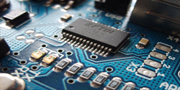
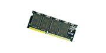
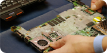
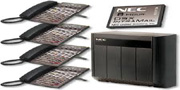
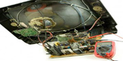

B Soft Technology Provide full IT Soluionns and services....!
We guarantee the highest Quality service at lowest and affordable prices. Our technicians are available 24 hours a day, 7 days a week, 365 days a year at your service !!We provide fully services in IT fields , including Hardware, Software and Networking services(mainly chip level servicing) . Our service include: -
* Chip Level Servicing
We, at BSOFT SERVICES are mainly concentrated in chip level servicing and we have experts in offering quality motherboard chip level repair services for various laptops or desktops. We have been engaged in providing chip level service for many reputed clients across Kerala. Our employees are immensely experienced in conducting flawless laptop motherboard chip level services to enhance client's productivity and efficiency.
* Networking Services
Efficient networking connects people to people, people to machines; and machines to machines. But if your network falters, non of that can happen. So when it comes to implementing or enhancing a solution to connect your workforce increase their productivity, and maintain a hight level of performance look to a recognized networking leader.Your network connects your workforce with the information they need to be productive. Its setup can determine how much your employees are able to accomplish each business day.
* Software Updations
Newer applications and resource hungry games make customers feel a thirst to increase the processing speed of their Notebooks. We have a good stock of memory modules; hard drives etc which are compatible for Notebooks produced by almost every manufacturer, hence More Computers can fulfill any challenging demand for upgrading.
* Laptop,Motherboard and SMPS servicing
The Motherboard is the most significant part inside the Laptop after the Processor. A Laptop that is “Not Powering On” or “Not giving any Display” could be an indication of a defective or misbehaving Motherboard. Most of the Notebook service providers replace them at almost the same cost as that of a new machine, whereas at MORE Computers, we have extensive knowledge and Chip-Level expertise to repair Notebook motherboards, thus solving common problems at much lower costs. Our expertise in replacing/ reflowing Surface Mounted (SMD) and BGA (Ball Grid Array) components and troubleshooting, helps us in fixing 75-85% of motherboard failures at a fraction of the cost of a new motherboard.
* Laptop,LCD and CRT monitor servicing
A dim (low brightness) or a Flickering display in your Laptop A dim (low brightness) or a Flickering display in your Laptop could be related to many sub-components of your display subsystem including the LCD cables, Inverter circuit, CCFL or LED backlight tubes or the LCD panel itself. We offer individual repair and /or replacement of components, thereby minimizing the cost to replace the whole unit. If the LCD Panel is broken we do have an extensive stock of OEM LCD panels sourced directly from manufacturers like LG Philips, Samsung, and Toshiba etc.
* New installation of EPABX
 External extensions outside subscriber's premises will be permitted only on the specific approval of the concerned authority and charged as per departmental tariff. In cases where external extensions from subscriber owned EPABX are provided within the premises of the subscribers using their own cables and wires without crossing any public road, no charge will be levied. Subscriber is free to use the existing internal wiring of the internal extensions left at the premises after the closure of the EPABX.
* Installation of new softwares
One of the biggest computer annoyances is when your machine gets slow over time. This can start to happen years after you get a PC, but sometimes it happens in just a few short months.This can be avoided by installing new softwares and update the existing softwares.Applying software updates is one of the most important things you can do with your computer.In fact, if you don’t do it, you’re very likely going to get some kind of malware in your system and even get hijacked.
* Keyboard and Other I/O ports
Keyboard and Track Pad faults mostly occur
when either fluid is spilt on it or keys become sluggish or detached. We stock Keyboards for almost all brands and their common models and OEM Touch pads from ALPS, Synaptics etc, thus offering a very short repair cycle. Other ports like USB or Ethernet get damaged by excessive usage, short circuit or mishandling.
We can repair/ replace individual connectors or the respective Mini PCI add-on cards at very competitive rates.
* Storage and Optical Drive problems
If you are unable to read or write different media on a same drive and/ or if you are experiencing difficulty in ejecting/ inserting the tray of your drive, probably the drive is conveying that it has reached the end of its life. Some cleaning and adjustments can be made to the Laser/ lens but most of the time; the only way to fix a defective optical drive is to replace it. We do have in stock a wide range of hard drives and optical drives like DVD Rewriters, CDRW/ DVD Combo drives and ordinary DVD or CD Writer drives, for most of the Notebooks currently available in the market. Hence, we can either repair or replace Optical drives quickly.
Repairs are not practical in terms of Hard Drives where we don’t take chances but replace with identical type and match.
* TV servicing (CRT and LCD) (Samsung, LG,Philiphs....etc)
If you are having a problem with your TV ( if it is either CRT or LCD )we provide services for the TV. For Some common problems on these power supply boards are bad capacitors with bulgy caps or leaking fluid. The first sign that the main board could have a problem is if you do not have an image on the screen. Be sure your source video is working correctly. Either replace the problem components on the board or replace the entire board
Other Activities...
* Full System Rent
* Laptop and Desktop Rent
* Projector and UPS rent
* New Software Installations
* Software Upgrades
* TV Servicing ( LCD / CRT tvs)